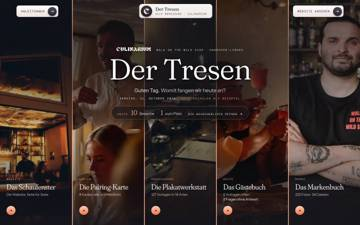

2 Zustände aus 2 Werkzeugen, je Zustand ein Bild in WebKit 1440 px, jeder Zustand auch in 1280/1000/390 px (Funde in der Zeile). Felder: 3 rot · 33 grün · 33 Auge (Kriterium A, mit dem Auge am Bild) · 0 nicht prüfbar · 5 entfällt (kein Dokument im Zustand).
rot = Fundgrün = gemessen, kein FundAugenicht prüfbar · Mauszeiger auf ein Feld zeigt Kriterium und Funde · Fundliste mit Bildern
| NICHT gefunden | Haus-Knopf ovalKriterium 1 | |
| NICHT gefunden | «PREISLISTE» abgeschnittenKriterium 2 | |
| NICHT gefunden | Feld «Etwas anderes für …»Kriterium 2 | |
| NICHT gefunden | Vorlagen-Leiste versetztKriterium 3 | |
| NICHT gefunden | «2023» allein in der ZeileKriterium 7 | |
| NICHT gefunden | Menükarte mit LöchernKriterium 10 | |
| NICHT gefunden | «Ausgebucht» mit LöchernKriterium 10 | |
| NICHT gefunden | Speisekarte nicht im StilKriterium 12 | |
| NICHT gefunden | Plakatarchiv = Fotos (zwei Wege, ein Ziel)Kriterium 15 | |
| NICHT gefunden | Tapete leerKriterium 4 | |
| NICHT gefunden | Fuss der Leiste nicht auf einer KanteKriterium 6 |
| # | Zustand | Bild WebKit 1440×900 | 1M | 2M | 3M | 4M+A | 5M | 6A | 7M | 8A | 9A | 10A | 11A | 12M | 13M+A | 14A | 15M | 16A | 17A | 18M | 19A | 20A | 21M | 22A | 23M+A | 24M | 25A | 26A | 27M | 28A | 29A | 30A | 31M | 32M+A | 33A | 34M | 35M | 36A | 37A+M |
|---|---|---|---|---|---|---|---|---|---|---|---|---|---|---|---|---|---|---|---|---|---|---|---|---|---|---|---|---|---|---|---|---|---|---|---|---|---|---|---|
| 001 | Startstart · 390: 0 Funde, 1000: 2 Funde, 1280: 0 Funde |  | 2 | 1 |